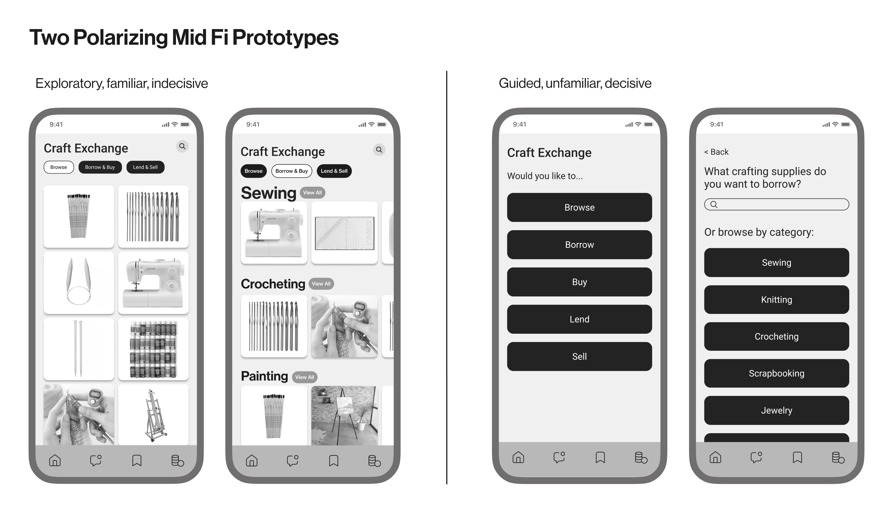

I then created 2 mid fidelity prototypes based on the crafting marketplace concept. The first prototype allowed users to explore, the interface is more familiar to other marketplace apps, and it allowed users to be indecisive. The second prototype provided a guided experience, the interface is more unfamiliar to other marketplace apps, and it forced users to make decisions each step of the way.
- Users want a balance between a guided and exploratory experience
- Users liked seeing visuals throughout the process
- Users want to narrow their search after selecting a category
- Users prefer to choose between borrowing or buying later on in the process
